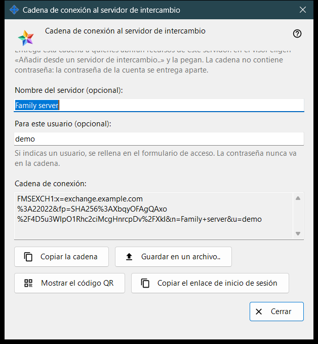
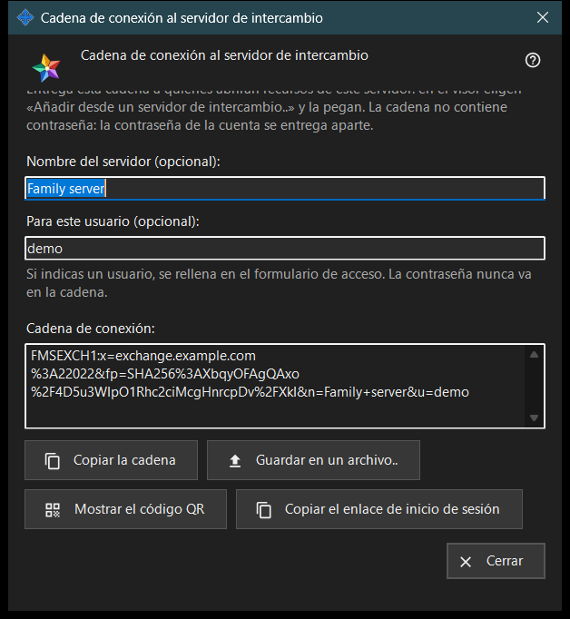

Cadena de conexión al servidor de intercambio
Para qué sirve
Esta ventana crea la cadena de conexión con la que otros dispositivos encuentran este servidor de intercambio y comprueban su certificado. Se abre con «Cadena de conexión y código QR..» en los ajustes del servidor de intercambio o en la bienvenida del servidor que aparece en el primer inicio. La ventana no cambia ningún ajuste.


En este orden
- Comprueba que el servidor tenga un certificado y que la dirección para los clientes esté definida.
- Abre la ventana: la cadena aparece de inmediato.
- Si quieres, escribe un nombre de servidor y un usuario; la cadena se vuelve a crear un instante después de que dejes de escribir.
- Copia la cadena, guárdala en un archivo, muestra su código QR o copia el enlace de inicio de sesión.
- Entrega el resultado a la otra persona y pasa la contraseña de la cuenta por separado.
- Pulsa «Cerrar».
Los elementos
Cuándo está activo el botón
El botón «Cadena de conexión y código QR..» solo está activo cuando el servidor tiene un certificado y la dirección para los clientes está definida. Con la dirección vacía el botón sigue desactivado y la indicación que hay debajo dice «Define primero la dirección para los clientes: sin ella no se puede crear la cadena de conexión.» Dentro de la ventana los botones siguen desactivados mientras no haya cadena.
Nombre del servidor y usuario
«Nombre del servidor (opcional):» admite hasta 64 caracteres y se guarda en la cadena como el nombre del servidor. «Para este usuario (opcional):» admite de 3 a 64 caracteres (a-z, 0-9, punto, guion bajo, guion) y se rellena en el formulario de inicio de sesión del dispositivo que usa la cadena. Una contraseña nunca entra en la cadena.
Cadena de conexión
El cuadro de solo lectura «Cadena de conexión:» muestra el resultado: la dirección para los clientes, la huella del certificado y el nombre y el usuario opcionales. El dispositivo que recibe la cadena confía en la huella que contiene, así que nadie tiene que compararla a mano.
Copiar y guardar
«Copiar la cadena» la pone en el portapapeles como texto normal, porque no es un secreto, y la línea de debajo dice «La cadena se ha copiado.» «Guardar en un archivo..» escribe un archivo de texto .fmsexch (nombre sugerido exchange-server.fmsexch) y muestra su ruta; el otro dispositivo lo lee con «Abrir archivo..» en su ventana de la cuenta de intercambio. Si el portapapeles está ocupado o no se puede escribir el archivo, una línea lo indica.
Código QR y enlace de inicio de sesión
«Mostrar el código QR» abre una imagen de la misma cadena para escanearla; nombra un servidor y no da acceso a nada. «Copiar el enlace de inicio de sesión» aparece solo cuando este servidor ofrece un cliente web; copia un enlace para el navegador que contiene la misma cadena.
Si no se puede crear la cadena
Una línea en el color de advertencia indica la causa: el nombre o el usuario está fuera de los límites; el servidor no tiene certificado (inicia el servidor una vez); o el servidor de intercambio no respondió. Corrige la causa y la cadena se vuelve a crear. «Cerrar» termina la ventana; el nombre y el usuario no se guardan.
Ajustes del gestor · Ajustes de uso compartido SFTP · Ajustes del servidor de intercambio